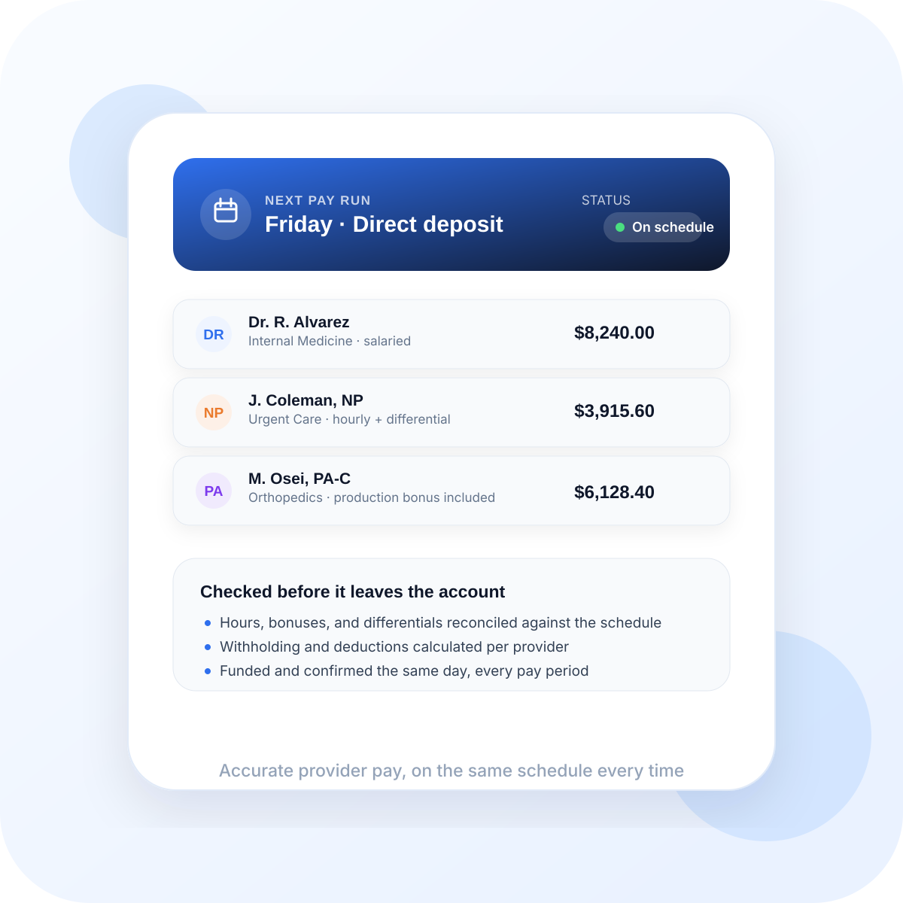

Variable schedules
Locations, shifts, and provider arrangements often change faster than finance systems can keep up with manually.
From provider compensation and shift hours to reconciled payout files, Anot Health helps teams run payroll with cleaner inputs, clearer review, and less last-minute risk.

Keep compensation clean across multiple providers, locations, shifts, and pay rules without chasing spreadsheets at the end of every cycle.
Match schedules, approved hours, and productivity inputs before payroll closes so the right time gets paid the first time.
Support salary, hourly, encounter-based, and blended compensation structures with clear audit trails for finance and leadership teams.
Deliver organized payroll files and summaries that your payroll team can review quickly and process with confidence.
We bring documentation, staffing inputs, and payroll rules into one dependable workflow so no one is left reconciling mismatched numbers at the last minute.
Gather approved hours, schedule details, and provider compensation inputs in one place.
Check rates, exceptions, bonuses, and pay rules before the cycle is finalized.
Hand finance a reconciled payroll package that is ready for final approval and submission.
It is rarely just a timesheet problem. Payroll complexity usually comes from how staffing, schedules, productivity, provider rules, and approvals all intersect.
Locations, shifts, and provider arrangements often change faster than finance systems can keep up with manually.
Salary, hourly, encounter-based, and blended pay structures all create room for mismatch if the inputs are not reconciled carefully.
When source data arrives late or inconsistently, finance teams end up closing payroll under pressure instead of control.
Need one repeatable review process across locations and staffing models.
Need accurate payout support tied to encounters, shifts, or provider arrangements.
Need payroll packages that can be approved with less uncertainty and less scrambling.
The finance team usually needs consistency in source data, approval timing, and compensation logic before payroll can start to feel predictable.
Payroll gets easier when the right data arrives in a more organized way before the cycle reaches finance.
Operational discipline matters because payroll stress usually comes from changes that surface too close to closeout.
Leaders and finance teams need cleaner logic around blended pay structures, exceptions, and payout support.
These are the usual decision questions when the goal is not just to process payroll, but to make the whole cycle calmer and more reliable.
Yes. That is one of the main use cases. The workflow is meant to support salary, hourly, encounter-based, and blended structures with clearer reconciliation.
No. Payroll stability usually depends on operations, managers, staffing leads, and finance all contributing cleaner inputs before the cycle closes.
The first gains are usually fewer last-minute corrections, cleaner files for finance review, and better confidence in provider payout support.
Yes. Groups with more locations, more staffing variation, and more compensation complexity often benefit the most from a repeatable payroll review structure.
When payroll data is clean, finance moves faster and clinical teams trust the process. We help you get there every cycle.
Talk to Our Team